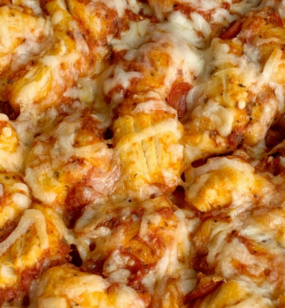

Pizza Bubble Bread

Description
Pizza Bubble Bread is an extremely quick and easy to make dish.
Perfect for someone that really can't be bothered to actually cook.
Ingredients
- Can of perferred biscut brand
- Jar of tomato sauce
- Mozzarella Cheese (Shredded)
- Garlic powder
Steps
- Open the can of biscuts and cut each one into quaters
- Place you biscut bites in a large bowl
- Pour your sauce and garlic powder into the bowl
and mix until the biscut bites are evenly coated
- Spray a cookie sheet with cooking oil and dump the bowl onto it
- Coat with as much cheese as desired
- Cook in oven at 350 degrees for 7-9 minutes
- Serve hot and enjoy!